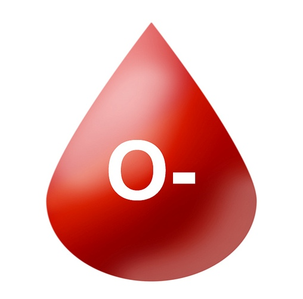
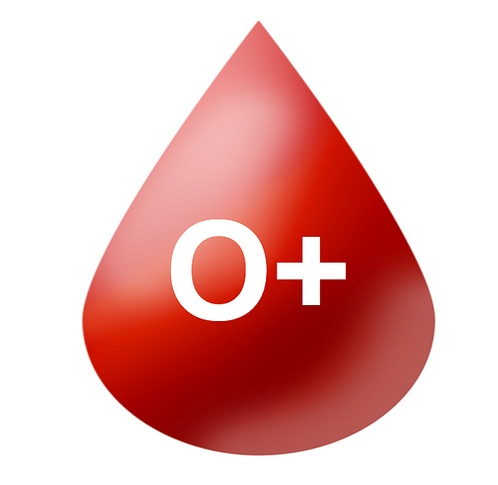
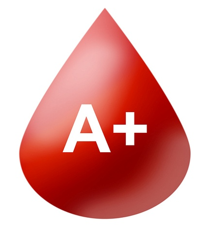
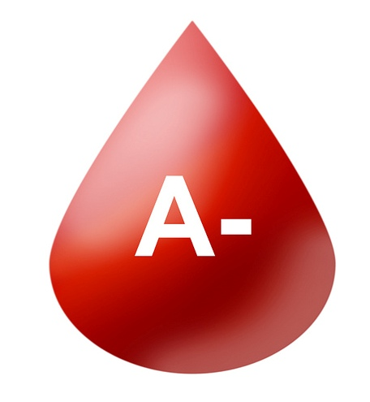
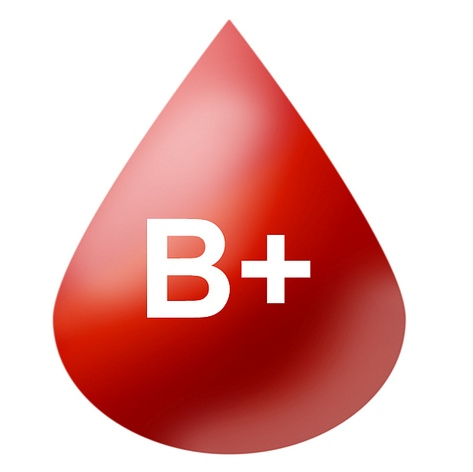
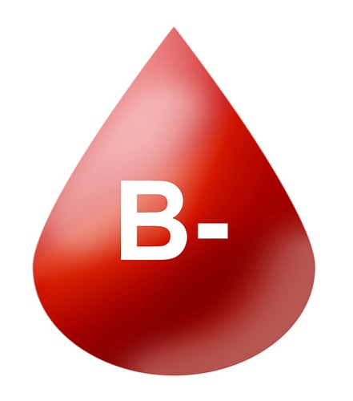
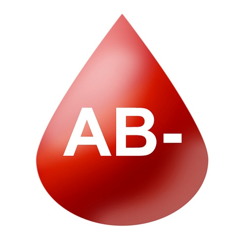
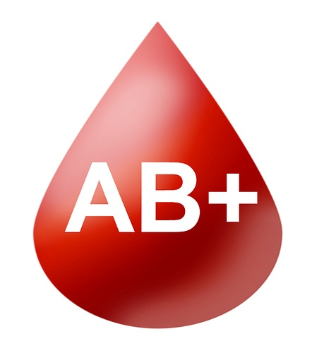

O-
As an O- blood donor, you are the universal red cell donor. Your red blood cells can be transfused to any patient. However, only 7% of people have this type.

O+
Type O+ is the most common and needed. Your blood works for any positive blood type. 38% of people have it.

A+
Type A+ is the second most common type. 34% of people have it. Your platelets are very useful.

A-
A- is rare. Only 6% have it. You can donate to anyone with A or AB blood, positive or negative.

B+
Type B+ can donate blood to other positive types and is found in 8% of the population.

B-
B- is rare, but it's needed. Only 2% of people have it, and it can be used for all negative blood types.

AB+
AB+ is the universal plasma donor, but only 3% of people have it. You can donate plasma to anyone.

AB-
AB- is rare and important. Only 1% of people have it, and it can be used for all negative blood types.